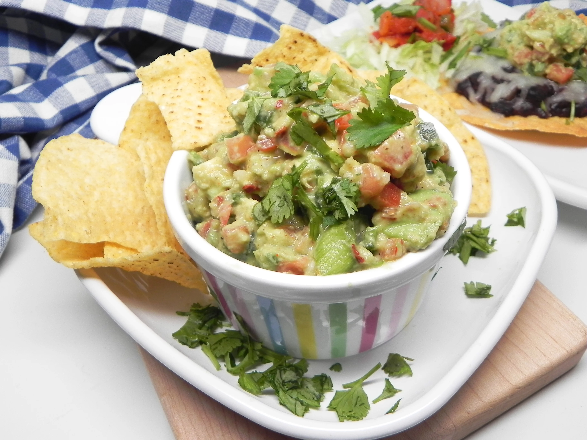

Guacamole

Description
This party-time guacamole is spicy, quick, and relatively healthy. Refrigerate guacamole with plastic wrap against the surface of the dip to prolong shelf life. Serve with tortilla chips or your favorite dipping accompaniment.
Per Serving:179 calories; protein 2.9g; carbohydrates 13.6g; fat 15g; sodium 304.6mg
Ingredients
- 3 ripe avocados, peeled and pitted
- lemon, juiced
- 3 Roma tomatoes, seeded and finely chopped
- 4 scallions, white parts only, thinly sliced
- 3 jalapeno peppers, finely chopped
Steps
- Add avocados and lemon juice to a medium mixing bowl; mash until desired consistency is almost reached. Stir in tomatoes, scallions, jalapeno peppers, garlic, cilantro, salt, red pepper flakes, pepper, and cayenne. Taste guacamole and adjust for seasoning.